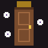

Seek Pre-Hardmode
4,500Life
How to meet it: open door 30, or use Black Goo (30 Gel, 3 Lens @ Work Bench).
Chases you through walls, throwing black goo that slows you and darkens your screen. Faster below half health.
A horror mod inspired by the Roblox game DOORS. Build the Hotel, open door after door, hide from Rush and Ambush, and survive Seek at door 30 and Figure in the Library at door 50.

Not yet compiled. The first version was written without a .NET SDK or tModLoader, so it may need a round of compile fixes. Multiplayer is supported in the code but hasn't been tested. All sprites are placeholders.
Craft a Hotel Key (20 Wood, 3 Iron/Lead Bar @ Work Bench) and use it where you want the Hotel to go.
| Entity | Where | What it does | How to survive |
|---|---|---|---|
| Rush | Hotel (door 5+); caves, rarely, after the Eye of Cthulhu | The lights flicker, then it roars through the whole area (150 damage). Can't be hurt. | Hide in a wardrobe, or use a Crucifix |
| Ambush | Hotel (door 15+) | Like Rush, but faster (190 damage), and it passes 2 to 5 times. | Stay hidden until it's really gone |
| Screech | Anywhere dark, underground or in the Hotel | Appears next to you ("Psst!") and bites after about 2.5 seconds (35 damage). 1 HP. | Point your cursor at it, or carry a light |
| Eyes | Hotel (door 3+); caves, rarely | Hurts you while you face it with a clear line of sight. Leaves after a minute. | Face away, or carry a Crucifix |
| Halt | Hotel (door 20+) | Creeps toward you, then shouts TURN AROUND and jumps to your other side. Leaves after 20 seconds. | Keep turning around |
| Hide | Wardrobes | Warns you after 15 seconds of hiding and throws you out after 20 (30 damage). | Don't hide for too long |
| Jack | Wardrobes | Sometimes a wardrobe is already taken. | Pick another wardrobe |
| Timothy | Hotel drawers | Sometimes jumps out when you open a chest (10 damage). | Nothing, it's just a spider |
How to meet it: open door 30, or use Black Goo (30 Gel, 3 Lens @ Work Bench).
Chases you through walls, throwing black goo that slows you and darkens your screen. Faster below half health.
How to meet it: open door 50 (the Library), or use a Library Book in Hardmode (3 Book, 5 Soul of Night, 5 Soul of Light @ Bookcase).
It's blind: it only hunts players who move or use items. Stand still or hide in a wardrobe and it wanders. It lunges when it's close.
A Crucifix stuns Seek and Figure for 4 seconds and takes off 10% of their life.
| Item | What it does | Recipe |
|---|---|---|
| Hotel Key | Builds or rebuilds the Hotel | 20 Wood, 3 Iron/Lead Bar @ Work Bench |
| Lighter | Hold for a small light | 1 Iron/Lead Bar, 5 Torch, 5 Gel @ Anvil |
| Flashlight | Hold for a long beam toward your cursor | 5 Iron/Lead Bar, 1 Lens, 10 Torch @ Anvil |
| Crucifix | Banishes Rush, Ambush, Screech, Eyes and Halt nearby, or stuns Seek and Figure. Carrying one blocks Eyes. Used up. | 8 Wood, 3 Fallen Star, 10 Bone @ Anvil |
| Vitamins | +50% move speed for 15 seconds | 2 Mushroom, 1 Bottled Water @ Placed Bottle (makes 3) |
| Lockpicks | Opens a locked Hotel door. Used up. | 1 Iron/Lead Bar @ Anvil (makes 3) |
| Room Key | Opens a locked Hotel door. Used up. | Found in Hotel drawers |
| Skeleton Key | Opens every locked Hotel door and never breaks | Dropped by Figure |
| Wardrobe | Placeable hiding spot. Right-click to hide, jump to get out. | 20 Wood @ Sawmill |
| Black Goo | Summons Seek | 30 Gel, 3 Lens @ Work Bench |
| Library Book | Summons Figure (Hardmode) | 3 Book, 5 Soul of Night, 5 Soul of Light @ Bookcase |
ModSources folder as DoorsMod.